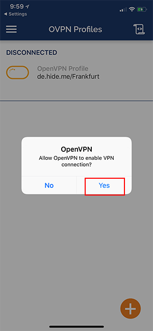
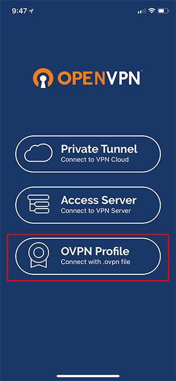

How to Setup OpenVPN on the iPhone
Background
This lesson demonstrates how to configure the iOS OpenVPN client to authenticate with certificates and configure the SOCKS proxy.
Prerequisites
- Device with iOS 9.0 and up
- Internet connectivity and Apple ID to access App Store and download OpenVPN application.
- Hosted a .pac file on a Web Server
On iOS is possible to create TUN tunnels only, as TAP tunnels are not supported by the operating system itself. For more information, please refer to OpenVPN iOS client FAQs. The OpenVPN server instance has to be configured to use TUN device.
Step by Step Tutorial
OpenVPN Connect Setup
Open iTunes on your computer, connect your iPhone or iPad, click on “File Sharing” and select “OpenVPN”. Then click on “Add…”.

Download the OpenVPN configuration file, unzip it and select the .ovpn file. Then click on “Add”.

Install the profile in OpenVPN Connect, for that click on the green plus button.

Enter your login credentials and click on the “Add” button. Optionally you can save your password.

A dialog window will open asking you to allow the OpenVPN iOS application to add a VPN configuration to the system. This is a default warning message advising you that your network connection will be redirected over the VPN and you can safely tap “Allow”.
When activating the connection, a dialog window will ask you to confirm that you want to enable the connection to VPN. Confirm with “Yes”.
If connection has been successfully established, the status is shown in the menu bar. You can manage your VPN connection with the OpenVPN app.

Afterwards you can easily access that profile by clicking on “OVPN Profile” in “OpenVPN Connect” app.

SOCKS proxy Setup
Open up settings > wifi.
Click on the blue arrow next to your wifi connection.
Scroll to the bottom where there is a section for HTTP Proxy.
Select Auto from this section.
In the URL field, key in the URL of the *.pac file you created and made web-accessible.